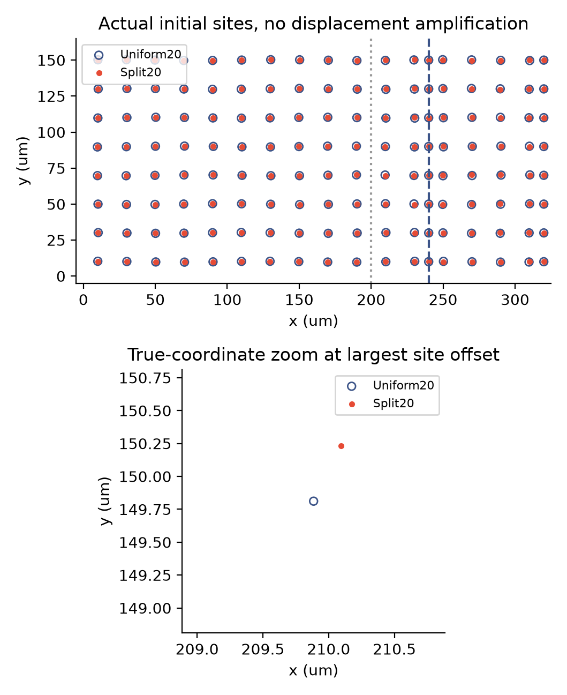
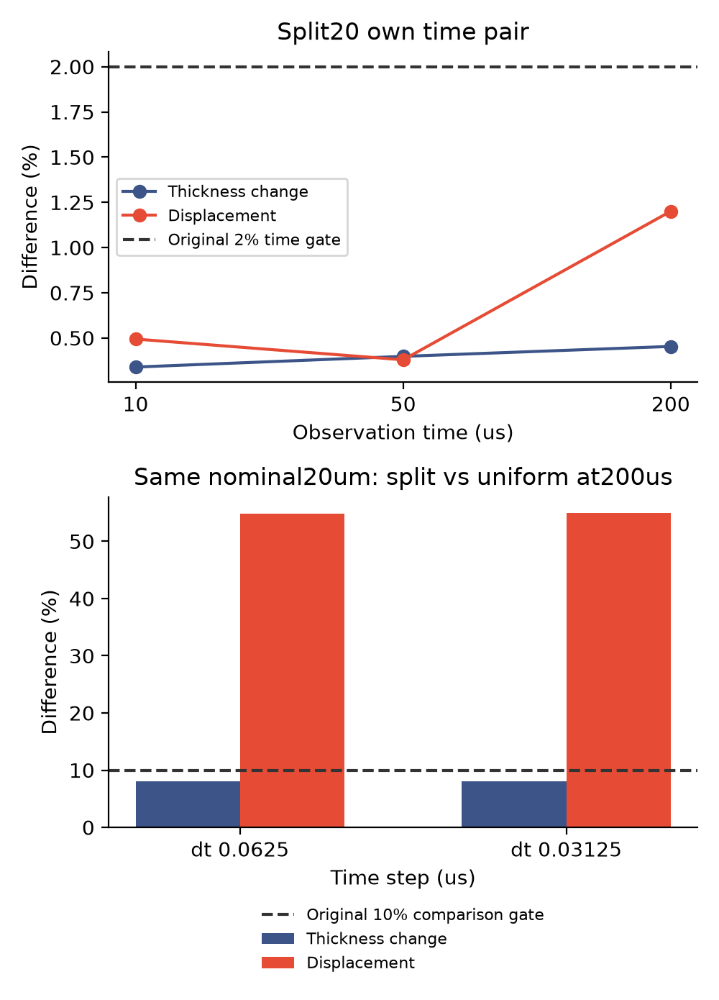
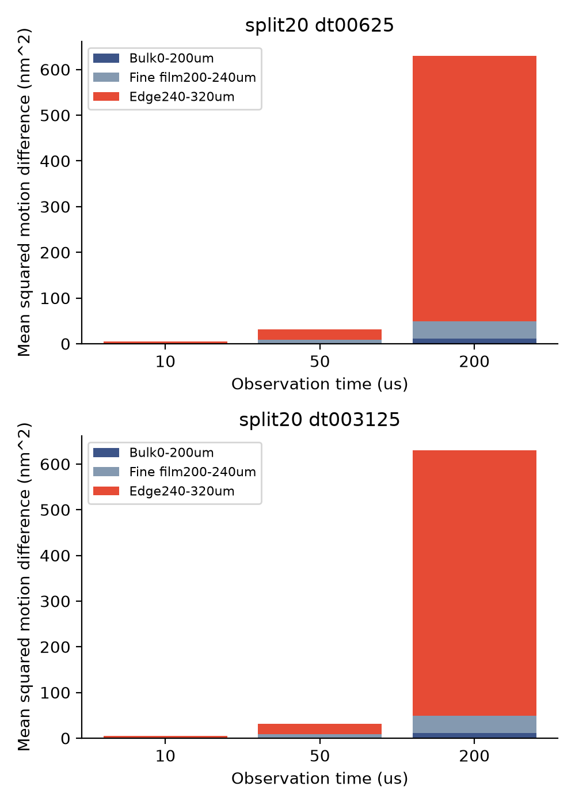

2026-11-13 · 同分辨率的可否证对照
同样20微米，
换一点粒子位置会怎样？
01 · 为什么做这组对照？
上一轮加密膜内背景，膜厚变化更接近了，位移差异却仍约96%。检查代码发现：局部细区的扰动函数会重新从第零列计数，均匀布局则沿用全域列号。我们保持两边名义间距都为20微米、粒子数都为144，只保留这一布局差别。
48个细区粒子的最大位置偏移为0.471微米。左侧、接口与浴液节点的位置一致。物理参数和准备程序都没改，但离散几何改变也可能改变准备出的膜厚。因此，这是布局与准备态共同影响的检查，不能单独归因为运动方程。

初始形状是否已经明显失真？
我们另外推导了当前定表活准备能量的一维解析圆弧，只把它用于事后检查，没有写入求解器。新布局边缘节点的初始膜厚与圆弧相差约0.71纳米RMS。

按单元重叠比较两组初始膜厚，原生差异是128.46纳米RMS；即使在同一解析圆弧上取值，再按同样单元比较，也会得到128.47纳米。两种差异场之间的剩余仅0.16纳米。这说明不能把不同采样位置的分片常量场差异，直接当成节点处形状误差；它仍不能解释200微秒时的运动差异。
解析推导与初始检查计划 · 节点数据 · 单元表示检查计划 · 代数分解数据
02 · 先过时间检查，再看布局差异
新增两组200微秒模拟，时间步为0.0625与0.03125微秒。均匀参照沿用上一轮已经完成且通过时间检查的原始轨迹，没有重算。比较时仍使用真实移动单元的重叠面积，保留原2%时间门槛和10%比较门槛。

| 新布局 | 时刻/微秒 | 膜厚变化差异 | 位移差异 | 10%比较门槛 |
|---|---|---|---|---|
| 0.0625微秒 | 10 | 10.36% | 7.98% | 未通过 |
| 0.0625微秒 | 50 | 10.59% | 5.93% | 未通过 |
| 0.0625微秒 | 200 | 7.99% | 54.83% | 未通过 |
| 0.03125微秒 | 10 | 10.35% | 7.98% | 未通过 |
| 0.03125微秒 | 50 | 10.60% | 5.93% | 未通过 |
| 0.03125微秒 | 200 | 7.99% | 55.01% | 未通过 |
03 · 差异有多大，发生在哪里？
split20_dt00625：差异RMS 25.11纳米，参照运动RMS 45.79纳米；split20_dt003125：差异RMS 25.11纳米，参照运动RMS 45.65纳米。这些是布局之间的差异，不是实验误差；相对百分比也不代表粒子走过了膜宽的相同比例。
下面把原有平方差按固定物理区域分开，三部分严格加回总量。它只是定位问题，不会取代原有验收标准。

位移差异也只是单元表示的问题吗？
本次检查不支持这个简单解释。我们保留完整误差，只按单元的逻辑对应关系把平方差分开：在小时间步的200微秒结果中，约96.18%来自逻辑对应单元之间，来自不同编号单元交叠的仅约3.82%。两部分严格加回原有总平方差，10%门槛仍未通过。
另外，按逻辑位置一一对应比较节点自身的位移，差异也约54.44%。它使用不同权重，只作诊断，不是替代验收。初始形状接近同一圆弧，并不保证释放后的节点轨迹对微小布局扰动不敏感。
新对照的总平方差仅约1.69%位于膜内背景区，而此前粗背景对照约65–67%位于该区。两种差异的分布不同，不能用55%除以此前96%来分摊原因。检查计划 · 完整分解与节点诊断数据。
另一个已知线索：短波面积响应不足
沿已有Voronoi粒子流体研究，另做了30组只读面积响应观察。规则布局与解析公式吻合，但最短两粒子波长的面积弹性部分响应接近零；加密会改善同一物理波数下的响应。这揭示一个需要检查的分辨率机制，尚未证明它主导当前实际运动。
该观察没有运行薄膜时间，省略曲面梯度刚度、黏性和实际边界，不能当成完整频率或实际因果结论。查看短波响应图、原始观察与文献边界。
这个200微秒窗口仍是短时释放诊断。小时间步组的浴液签名液量账本净变化为-1.888e-16立方米，方向仍为浴液向膜侧补液；它不是长期框架净排液或条纹实验验证。原生库存方向与最小膜厚。
04 · 证据与边界
4组新增原生运行、24项检查、9,602个接受步完成。原生计算累计28.6分钟。保存步独立标量与机械核对见下方数据；守恒或力阈值通过，不会自动使布局敏感性通过。
已有移动网格研究讨论过网格噪声、正则化及面积输运一致性，详见原始文献与适用边界。这些是参考线索，尚未证明本模型出现同一种问题。本轮没有加入平滑器、改动物理参数或拟合排液速度。
冻结计划、数据、来源与复现
- 源码与归档映射
- 冻结计划 · 执行参数与源码／二进制来源 · 运行状态与原生日志哈希
- 逻辑粒子映射 · 全部原门槛 · 绝对量与分区数据
- 独立标量核对 · 独立机械核对 · 日志
- 原始文件与分卷哈希 · 恢复脚本
- 原始数据分卷1（0.89MB）
- 原始数据分卷2（0.94MB）
- 原始数据分卷3（1.41MB）
- 原始数据分卷4（1.42MB）
- 原始数据分卷5（1.45MB）
- 原始数据分卷6（0.31MB）
恢复新数据：python restore_raw.py REPORT_DIRECTORY NEW_OUTPUT_DIRECTORY。均匀参照数据从上一轮报告恢复，路径与SHA256记在protocol.json，拒绝覆盖已有输出。全部图提供PNG与矢量PDF。